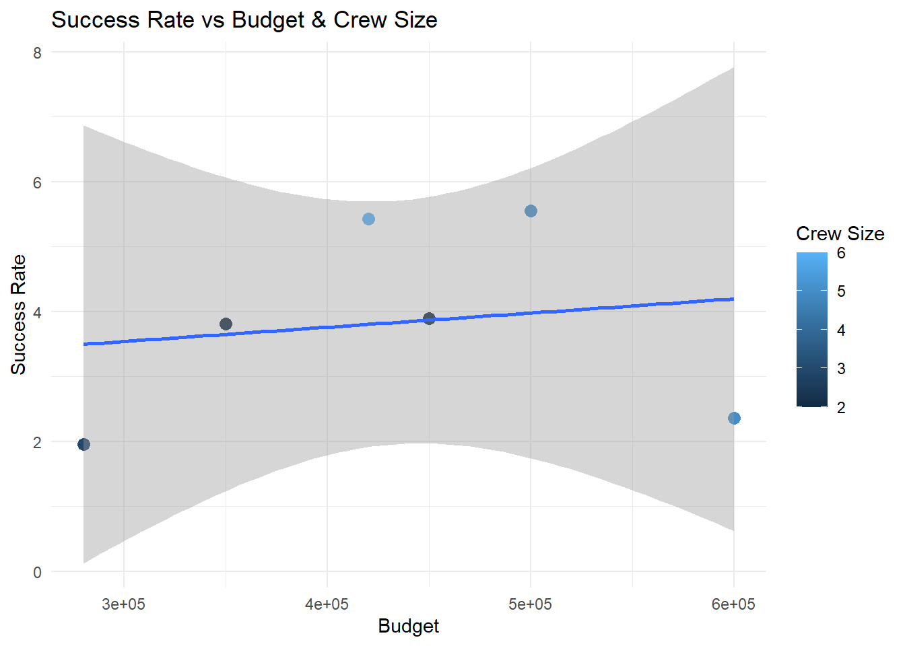
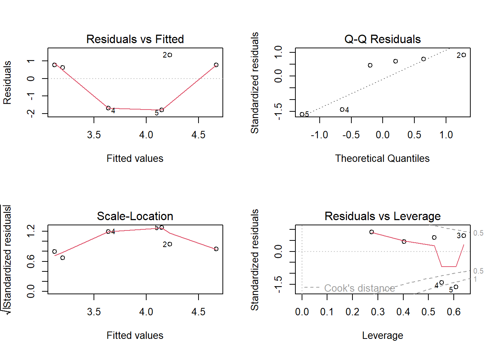

Linear Regression Analysis of Cinematic Productions
In this section, we perform a linear regression analysis to understand how production budget and crew size affect the success rate of a production.
The success rate is defined as:
[ = ]
Where:
ExpectedDuration is the planned duration of the production (EndDate - StartDate)
ActualWorkload is the total duration of all shooting sessions.
Data Preparation
We first calculate the total actual workload for each production by summing the duration of all shooting sessions.
We then merge this with the production budget and crew size to create the dataset for modeling.
library(DBI)library(RSQLite)library(tidyverse)
── Attaching core tidyverse packages ──────────────────────── tidyverse 2.0.0 ──
✔ dplyr 1.1.4 ✔ readr 2.1.6
✔ forcats 1.0.1 ✔ stringr 1.6.0
✔ ggplot2 4.0.1 ✔ tibble 3.3.0
✔ lubridate 1.9.4 ✔ tidyr 1.3.2
✔ purrr 1.2.0
── Conflicts ────────────────────────────────────────── tidyverse_conflicts() ──
✖ dplyr::filter() masks stats::filter()
✖ dplyr::lag() masks stats::lag()
ℹ Use the conflicted package (<http://conflicted.r-lib.org/>) to force all conflicts to become errors
library(ggplot2)# Connect to databasecon <-dbConnect(SQLite(), "data/virtual_production.db")# Sum duration hours per productionactual_workload <-dbGetQuery(con, "SELECT ProductionID, SUM(DurationHours) AS ActualWorkloadFROM ShootingSessions -- correct plural tableGROUP BY ProductionID")# Get production info and crew sizeproduction_info <-dbGetQuery(con, "SELECT p.ProductionID, p.Budget, julianday(p.EndDate) - julianday(p.StartDate) AS ExpectedDuration, COUNT(pc.CrewID) AS CrewSizeFROM Productions pLEFT JOIN ProductionCrew pc ON p.ProductionID = pc.ProductionIDGROUP BY p.ProductionID")# Merge datasets and calculate success ratedata_model <- production_info %>%left_join(actual_workload, by ="ProductionID") %>%mutate(SuccessRate = ExpectedDuration / ActualWorkload )head(data_model)
We fit a linear regression model to predict SuccessRate based on Budget and CrewSize.
The model coefficients will help us understand the relationship between these variables and production success.
# Fit linear regressionmodel <-lm(SuccessRate ~ Budget + CrewSize, data = data_model)# Show model summarysummary(model)
Call:
lm(formula = SuccessRate ~ Budget + CrewSize, data = data_model)
Residuals:
1 2 3 4 5 6
0.6097 1.3311 0.7659 -1.6829 -1.7913 0.7675
Coefficients:
Estimate Std. Error t value Pr(>|t|)
(Intercept) 2.716e+00 3.140e+00 0.865 0.451
Budget -7.826e-07 8.171e-06 -0.096 0.930
CrewSize 3.801e-01 5.331e-01 0.713 0.527
Residual standard error: 1.766 on 3 degrees of freedom
Multiple R-squared: 0.1678, Adjusted R-squared: -0.3869
F-statistic: 0.3025 on 2 and 3 DF, p-value: 0.7591
Model Visualization
We plot the success rate against budget and crew size to visualise trends and patterns.
ggplot(data_model, aes(x = Budget, y = SuccessRate, color = CrewSize)) +geom_point(size =3) +geom_smooth(method ="lm", se =TRUE) +labs(title ="Success Rate vs Budget & Crew Size",x ="Budget",y ="Success Rate",color ="Crew Size" ) +theme_minimal()
`geom_smooth()` using formula = 'y ~ x'
Warning: The following aesthetics were dropped during statistical transformation:
colour.
ℹ This can happen when ggplot fails to infer the correct grouping structure in
the data.
ℹ Did you forget to specify a `group` aesthetic or to convert a numerical
variable into a factor?

Model Interpretation
Intercept: the predicted success rate when both budget and crew size are zero.
Budget coefficient: the change in success rate for each unit increase in budget, keeping crew size constant.
CrewSize coefficient: the change in success rate for each additional crew member, keeping budget constant.
Insights:
A positive coefficient indicates that increasing the variable improves the success rate.
A negative coefficient indicates that increasing the variable reduces the success rate.
Model Reliability & Outliers
We examine the residuals and leverage points to identify outliers and evaluate the reliability of the model.
# Check residuals and model diagnosticspar(mfrow =c(2,2))plot(model)

Observations:
Residual vs Fitted: should be randomly scattered; patterns may indicate non-linearity.
Normal Q-Q: checks residual normality.
Scale-Location: checks for homoscedasticity.
Residuals vs Leverage: identifies influential outliers.
Conclusion: Linear regression provides a good first approximation but may be sensitive to outliers or extreme values in budget or crew size.